深度专访：疫情之下的创意从业者，你们还好吗？
原文链接 备份链接 \ 💪 / *2020年的开头，一场突如其来的疫情让所有行业都笼罩在阴影之下，创意产业也无法幸免。* *工作要么被取消，要么无限延期；每天紧盯确诊人数的变化，似乎也失去了创作的心情……* *疫情之下的你们都还好吗？* …


这题来自Voicer，他们采访了包括我们在内的6位创意行业内不同分支的同侪，分享了这次疫情对他们的影响以及他们相应的思考和应对策略。
深度专访：疫情之下的创意从业者，你们还好吗？
而在这个心情极其复杂的超长春节里，我们继续接棒和更多的设计行业公司以及几个端头聊了聊近期疫情之下的状态与计划。也许未来的生活与事业还将面临一段时间的考验。但，一切都要继续。接受事实，沉着冷静，积极，无畏，并坚信，无论什么样的选择，都是好的选择。

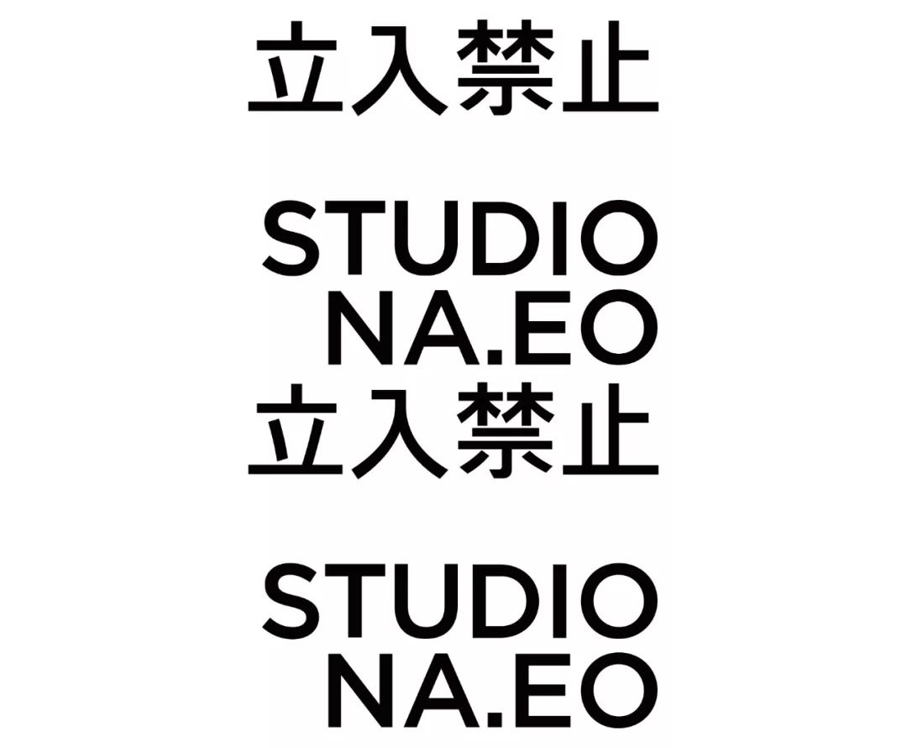
立入禁止于2015年重组，由设计取向完全不同的创意人组成，他们从事平面设计、插图、交互界面、出版、策划展览……几乎涵盖了平面设计的所能接触到的方方面面，具有极强的跨域性。尽管工作室已出现工龄15年以上的“老人”，但立入禁止依旧是个极其年轻的团队。
自述：刘治治 & 迷盒
设计的三个端头：设计师、客户和供应商都受到了影响
比较巧合的是我们团队中有几个设计师是湖北籍的，相对幸运的是其中一位设计师原计划回武汉过年临时改道去了湖北的另一座城市宜昌。而其他成员大都来自天南地北，回北京是一件比较困难的事，就算是突破重重封锁回来了，也需要在家禁闭14天。而今年开年我们的项目大多进入品牌维护细节化阶段，有的甚至需要去现场，设计这件事在线上其实并不能充分沟通，我们尝试过远程办公的形式且开过几次视频会议，更多成为了伙伴们的云见面方式。在工作上其实并没有办法实时反馈，沟通效率比较低，目前主要工作还是由在北京的同事们完成。

买手店Pence视觉系统设计
其实很多时候不是我们选择什么行业的客户，而是取决于什么行业比较欣欣向荣。巧合的是我们去年设计的很多项目都是来自目前受灾情况最严重的餐饮业，本来在经济持续低迷的年代里我们其实特别看好餐饮业在未来几年的发展，直到这次疫情。在后面我们特地采访了“生死只在一线之间”的一坐一忘。除此之外，我们服务的客户很多都是做人群聚合的项目。比如展览、大型活动等，其实会展一直都是发展势头比较好且越来越全球化的行业，直到这次疫情。很多项目都推迟或者是取消了。今年有一个国际电影节项目，现在出、入境都有问题，电影节本身又是人群聚集的活动，所以仍在观望政策和疫情走向，延期举办已成定局。而今年我们服务的另一个abC艺术书展也确定延期举办了，年前印刷的海报等宣传物料也就此作废。还有跟东京奥运会相关的项目，每天盯着WHO的动向和新闻变成我们的常态，而最新消息是疫情在5月得不到控制就会被取消。
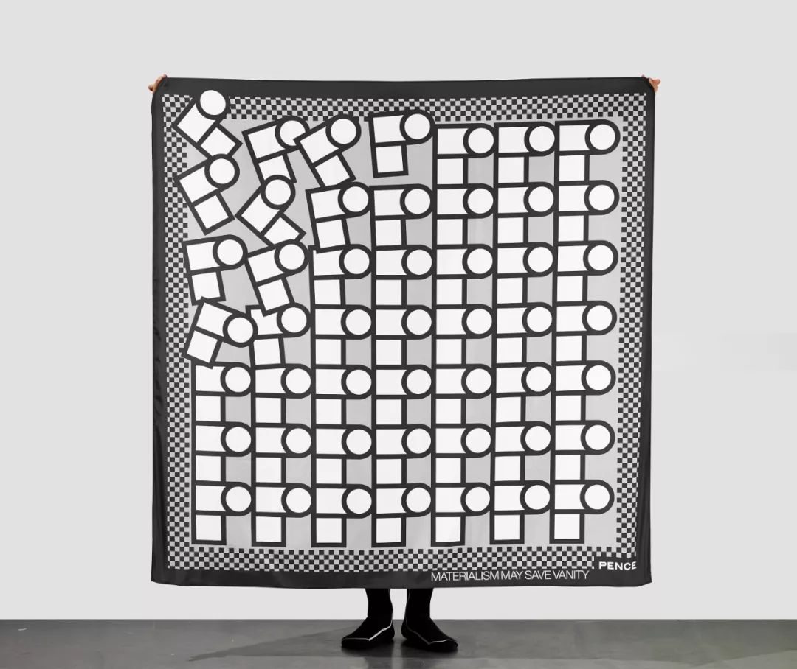
一些公司也无力在这个时候改变视觉形象。比如年前有一个客户，是线上甜品品牌，找到我们想做VI品牌形象的升级。节前没时间聊，等最近再联系上的时候客户说自己每月损失近百万，需要进口的原材料进不来，员工工资还得照发，“我们现在考虑的是怎么不花钱，VI往后放”。
供应商也是设计里非常重要的一个环节，设计师仅仅是设计而已，具体实现这些设计还是要依靠供应商。现在印刷厂至少三月才能开工，很多南方的供应商复工遥遥无期，一些小型工厂就此倒闭。我们本来计划推出的2020年鼠年日历，打样已经完成。只等树脂材料的进口，但是PHEIC之后，进口原材料变得极为困难，而日历这种载体的时效性决定了这个设计方向的终结，等到供应商复工之后我们会用新的形式来最终完善这个设计。
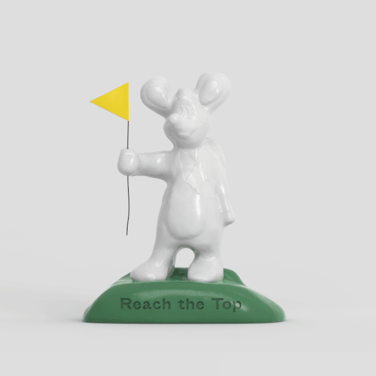

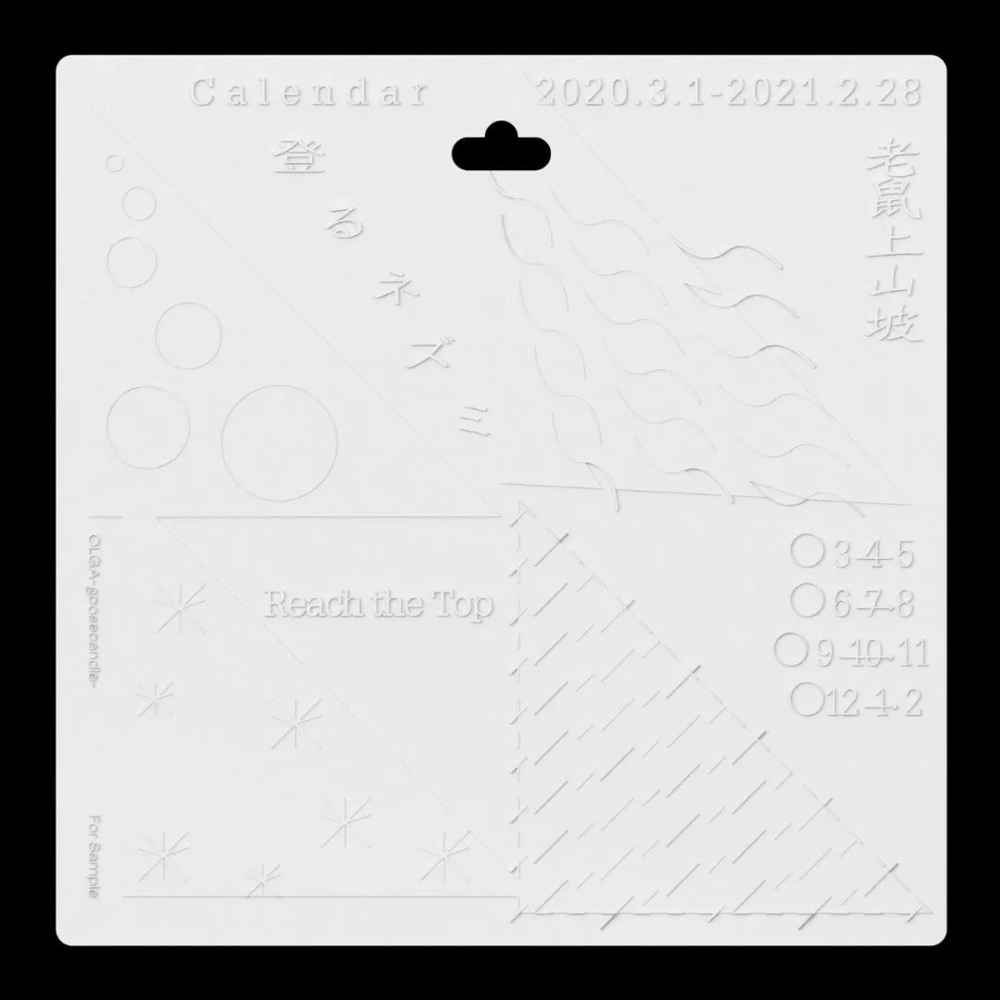
这次灾难炸出了很多人的脆弱
我们全天候的互联，但焦虑、担心、沮丧和愤怒的感觉却达到了历史最高的程度，这种焦虑感又与当下环境相互作用，被裹挟在现实矛盾之中持续动荡。
我们团队总共有9个人，不凑巧的是有一位刚回北京来的员工隔壁单元就有一个确诊，他们的小区也进入了特别严格的“战时”管理，返京人员甚至需要自行准备14天的食物，然后大门就此被封上。大家都进入了一个疑神疑鬼的阶段，有人查各种感染症状应对自己的身体情况，有人每小时记录自己的体温，有一天甚至焦虑到了37.4度……这是我们每一个人面临的现实，这次灾难炸出了很多人的脆弱，当你的内心世界不平静的时候，其实是无法去做设计相关的事的。
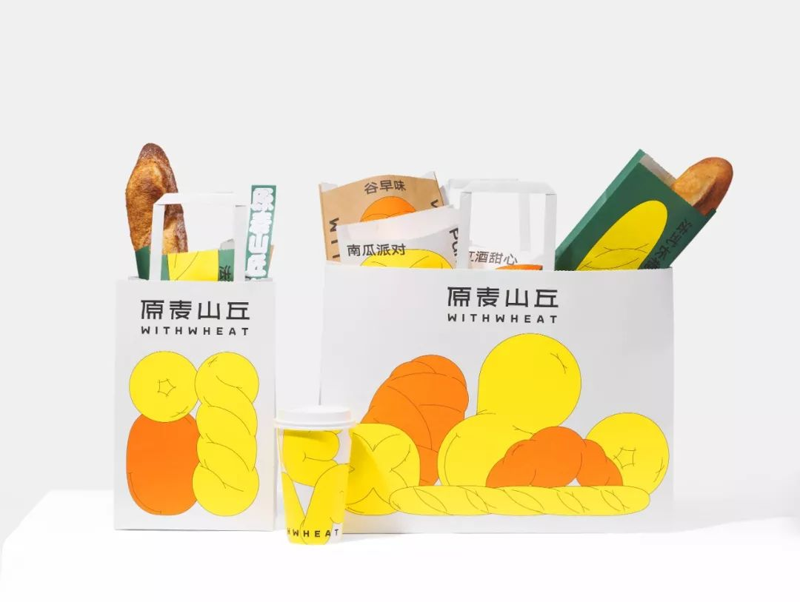
原麦山丘视觉系统设计
现在客户更加谨慎，预算至少在上半年不会再像疫情之前一样充裕了。但是长期来看，不觉得设计行业会有一个洗牌。因为设计行业有它的特殊性，平面设计工作室主要还是看主创人员的设计逻辑与能力。在一段时间的沉寂之后，序列还是会保持的，只是可能服务的行业会有变化。
好的一方面是我们留给自己的设计思考时间更多了，今年也许有很多项目会花更长的时间来打磨。比如电影节原计划其实在2月初就需要提案，延期举办也让我们有更多的时间来思考究竟什么样的视觉语言才能在权力审美与普通民众之间达到平衡，以及怎样才能扭转以往电影节在大众传播中的视觉负面影响。
疫情之后我们还是会更多地发出自己的声音，梳理一下以往的作品。我们可能不会考虑改变业务的范围，但是我们会更多的思考“设计”本身以及一切收束于“人”。
治世之能臣，乱世之饭桶
平面设计是一件锦上添花的事，疫情之下做设计，的确显得有些百无一用。设计师是“治世之能臣，乱世之饭桶”。治世的时候，设计师的任务是保证这个世界有趣，有多样性；但情况反过来的话，谈多样性多少显得有些不合时宜。
在相对繁荣的社会里，人们对审美和精神的需求大，我们的工作才有效。一旦我们转换成一个刚需社会，在人们忙于满足马斯洛需求里最底层的那些需求的时候，审美、精神、美学、生活方式会不会持续走低，这个低潮会持续多久，而这种例外状态会不会变成常态，会不会就此入侵我们以后的日常生活，这是一个让我们不仅仅是作为设计师身份在焦虑的问题。

《开放之城——清明上河图香港展》视觉系统设计
记住苦难比打气加油重要
疫情发生之后，做什么事情之前都会想：意义是什么。现在的我们无法做无关痛痒的事情。设计师最大的力量是在疫情过去之后帮助人们葆有对这段时间苦难的记忆，而不是吆喝口号式地加油打气。我们也接到了疫情打气海报设计的委托，虽然那句“奥斯维辛之后诗歌是可耻的”被某只错误挪用反自黑，但在瘟疫之中的海报设计是很荒诞的，不说它比不上救助信息整理的infographic设计，甚至抵不上一次随手捐转发，它无论从美学上还是从功能上都是失败的。
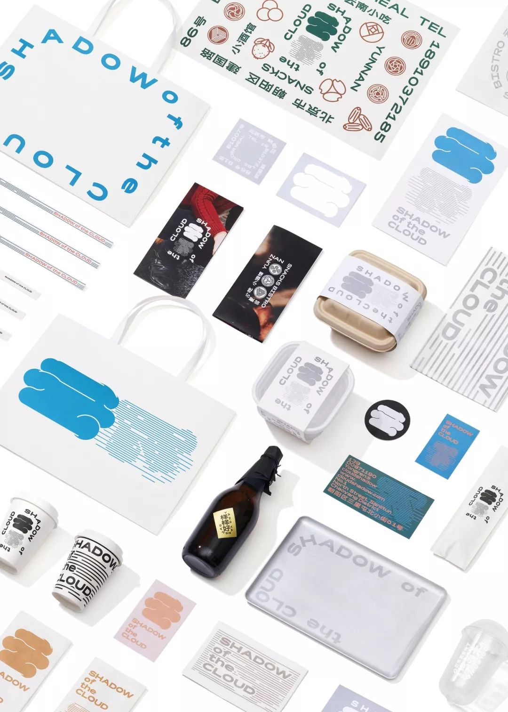
云下餐厅视觉系统设计
瘟疫过后，人们会留下几种记忆？非典过去17年了，人们还记得谁是蒋彦永？“没有记性的人，从本质上说就是土。鞋愿意把我们踩成什么样，由那只鞋说了算。” 没有人在每年三、四月的时候纪念非典，电影人没有拍很多相关的纪录片，因为艺术家也是健忘者之一。记住苦难是比打气加油重要得多的，为什么非典之后又重蹈覆辙，就是因为大家没有在事件过后好好梳理。
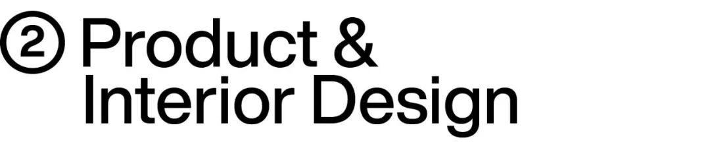

mattersofseeing艺术设计工作室，是一家跨领域的创意工作室，致力于挖掘艺术在商业领域的应用，以及在多元新文化语境下寻找新的美学视觉体验。工作室项目内容包括：商业、展览、住宅的空间设计与陈列，以及品牌平面视觉艺术指导。
OPEN OBJECT是一个诞生于2017年的中国陶瓷设计品牌，通过融合现代主义风格与现有陶瓷材料技艺，重新诠释“中国陶瓷”这个既有概念。OPEN OBJECT下设两条品牌线：LAB和MASS。LAB线与陶艺家、艺术家合作，仅生产限量品，用精湛的工艺来实现凝练的外观，超越普通商品的形态。MASS线以大批量生产的产品为主，用设计赋予陶瓷产品性能和美感上的平衡。
自述：董谧
情绪是跌宕起伏的
意识到疫情的严重性比较晚，几乎是22号要停工回家过年的时候，才从大面积报道中意识到事情扩大的速度超过了人们的预期。当时非常不确定事情的走向，我内心还是有恐惧的，所以下意识地在回家之前，把所有的N95口罩都打包带在身上，然后又下单了40个寄到父母家里。
假日的时间，早上会做简单的运动，然后看书或者写毛笔字，花很长时间做午饭，下午会用来看电影或者剧（一连看了8部侯麦，然后看了跟时局有些话题相关的《新闻编辑室》）。以前很少在家整天整天呆着，没有掌握规律，但现在学会了跟着家里的阳光行进路线在卧室和客厅之间移动。
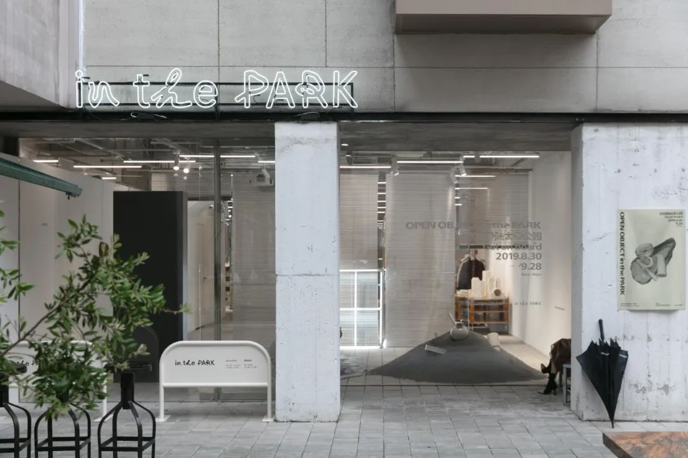
OPEN OBJECT 在上海买手店in the PARK的展览
关于疫情肯定是关注进展，追看一些分析文章，了解它的来源、感染过程、症状等；其次是追看武汉那边的医疗部门的信息更新，了解他们是否有能力处理大量病患；另外了解了一下社会上的捐助渠道，并且力所能及地提供一些支持；最后其实是这几个层面的反复follow-up，事情的进展每天不同，会出现新的问题、新的解决方案。
此次疫情我主要是从网络渠道获取信息，我个人也经历了好几个波段的情绪起伏，不断在失望&希望、恐惧&有信心之间摆荡。事件之初的态度可能和大多数人一样，让自己浸淫在信息的洪流当中，任凭负面情绪占据主导。一定程度上这种——“知道武汉及湖北省都在遭受遭难，如果我自己安然度日，太不人道了”——的心理占据了潜意识，所以可能也潜意识地选择阅读更多的负面信息。
但是一段时间以后，发现自己的情绪难以承受，于是自保机制启动，每天有控制地获取信息。同时会跟很多朋友不断讨论这些内容，交换各自的看法——不同的人有不同的角度，这个事实很有趣，为我提供了新的观看疫情发展的视角。即便是与我志同道合、年龄社会阅历相仿的朋友，也可能与我产生南辕北辙的看法，说明每一个人获取信息的渠道的差异可能很大，另外每个人对信息选择与加工的机制大相径庭，人们对于真相的追求其实是很困难的，复杂的信息渠道和表述方式，最终有可能使得大家仍然笃信自己早已认定的事情。承认事情的复杂性，并且不带有太大的野心，保持冷静退一步观察——这是我对自己提出的一个建议。
疫情反而让工作安排更为妥帖
远程复工之后，上班的时间与往常一致，通勤的时间被挪用为做午饭的时间。一开始在家办公有些焦虑，由于见不到同事，感觉对于项目进程失去控制。但是到目前为止，我们已经差不多复工3周，逐渐对远程办公感到习惯，也发现其优势，在于相比很多当面的沟通，输入文字的过程会让我抽离主体，以旁观者的角度来沟通，反而有时候看事情更清楚。
工作方面一是了解国家政策是否有出台向中小企业倾斜的政策规定；然后是各地返工时间的规定；再是返工隔离时间的规定等；另外就是国家经济的受损程度，以及对于如何逐步恢复的预测。

OPEN OBJECT“半”系列月白碗
我们工作室2月3日便复工了。一开始就做好了复工的心理准备，要求员工尽可能在家创造一个可以安心工作的物理环境。开工第一天我们简单做了一个Pep talk, 把员工带入我们的Big picture中, 鼓励大家有信心地迎接接下来的无论什么状况。
幸运的是，除了远程工作的新模式以外，没有太大的影响。有一些时效性比较强的项目，因为疫情的关系取消了。但工作室总体的项目量没有太大的变化。我们再次梳理了自己的工作范畴，力图去芜存菁——但这事实上这也是我们不断在做的事情，并非是疫情催生的事件。关于疫情公司层面的调整，更多是在心理上与观念上的调整。也可以点击这个链接🔗 Ways of Seeing 文中详述。
对于设计公司，如同疫情中的所有人，我们的客户也会面临不同程度的资金压力，这使得他们做决策与调整时，在收支维度上更用心权衡。但花费最少的预算达到最大化的效果一直是我们的工作理念之一，所以对我们而言，双方目标是一致的。

OPEN OBJECT“线”系列花器
对于品牌，上游供应链因为疫情影响把生产计划稍稍推后了，但对我们影响不大。而针对下游销售渠道，因为我们一直在布局线下结合线上、B端结合C端，工作量是非常大的，这一段时间我们正好用来梳理品牌运营的诸多细节、敲定合作，争取从三月开始把正常的经营活动带回正轨。原定OPEN OBJECT会在上半年到年中有一些小型的独立展览，依据现在的节奏也会相应推后。
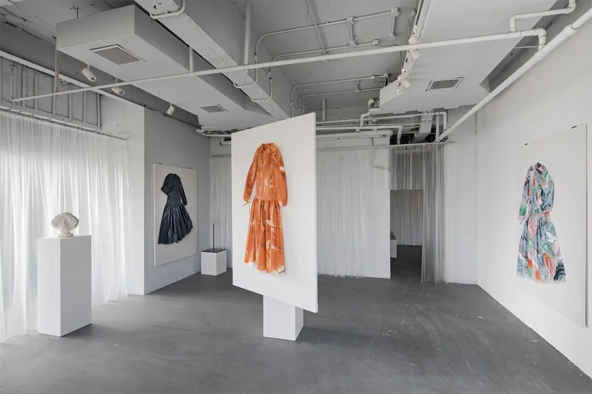
XU ZHI展览
是一个反思的好时机
实话说，作为设计师我自己的专业不能在疫情中发挥太大作用。我觉得各行各业能够做的是从更宏观的层面反思自己之前的商业逻辑是否是正确的，是否在一元价值体系下不断向前狂奔而来不及思考。既然2020年第一季度的经济状况注定会比较糟糕，那么大家能做好的就是努力完成本职工作，为已经失去的时间做一些补救。
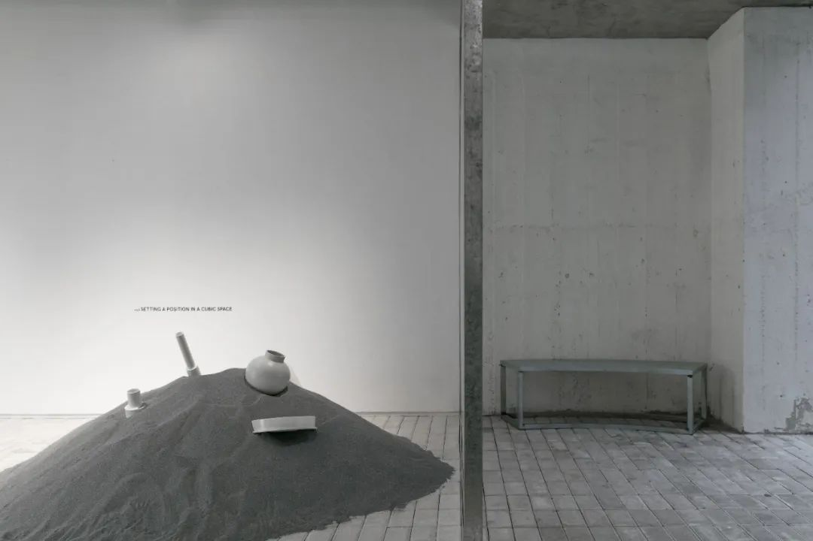
OPEN OBJECT 在上海买手店in the PARK的展览
我相信很多人都会有有意识或者被迫停下来审视自己的工作，在此期间，我们觉得跟我们的客户沟通更深入、理解更多了。大家会在更深入的层面上交换意见，在商业模式和经营理念上有更丰富、更坦诚的沟通，有一种紧密合作的感受——这是我之前没有遭遇过的，两个商业个体一定程度上具有了“人性”的个人属性，彼此理解彼此信任，这种感觉蛮好的，我想我们在之后与客户的合作当中，会想要继续保有这种“人性”的一面。
疫情结束后物理条件上应该不会有太大的变化，出于效率考量，我们不会变成远程办公。但是疫情之后，大家都是“经历过事儿”的人了，肯定都有一些心理上的成长，会有更多元的角度来思考和解决问题，更习惯多问一句“为什么”，更试图去抓住事情的本质，这是我希望看到的局面。
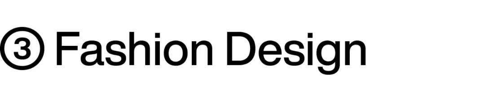

消化设计工作间，2010年成立于北京，“消”为成衣，“化”为概念。
“消化”始终以接近学术研究的方式实践设计——从最初热衷的概念化、着重视觉官能的设计，到研习手工织物与民间服饰、梳理传统和当下的关系，最后回归生活本体。“消化” 相信，传统与先锋不是对立的两面。理解并尊重事物的本源，做恰如其分的衣服，是“消化”秉持的创作方向。网址：www.digest-design.com 消化三里：www.digest3kg.com
自述：Dooling
“不让李文亮死”这件事之后，我觉得自己被解放了
最初得到消息，大概是1月20号那天吧，北京报有人确诊，然后我家人在国外，告诉我留意这次流感。真正意识到严重，是23号半夜，从武汉朋友那里知道封城了。这个至少在现代吧，没有过先例。

“DIGEST UNI- 2020” RUNWAY
从1月23号到李文亮去世后几天，2月10号吧，这段时间我每天差不多看十几个小时的新闻，加上归拾家里十年没动的书籍资料等等（这是这次假期原本的计划），平均每天睡3-5个钟头，有点儿透支，但停不下来。一定程度上，我是一个“新闻动物”，平时每天也都要看几篇过万字的报道和文章。因为我希望自己面对的是一个“清澈”的世界，至少在我目力所及的部分，是这样的。

第一个”化”系列：《光蚀 LIGHT LOST》
在疫情期间几乎关注的都是和疫情相关的。所有大家看过的新闻，我应该都看过了。觉得每天不赶紧醒来看新闻，就要被它们吞食了。就像是一个巨大的无形的怪物，始终蹲守在你身边。你不消化它，它就把你消化了。我相信很多人也有类似的感受，尤其是共情感强烈的人。
“不让李文亮死”这件事之后，我觉得自己被解放了。因为你看到了那条底线，已经低到了你不需要再通过事件去观察它的位置了，没有必要了，而且这是一个长久积累下来的东西，积劳成疾，是个病，它得发出来。我能做的就是抱着最大的善意，等待它的自愈或就此消亡。然后会有一个新的循环开始，就像冬天结束，春天一定会来那样的。我始终相信周而复始，历史从来都不是以线性前进的。
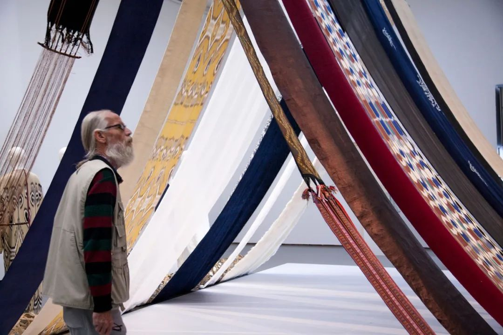
在2014年，荷兰博伊曼斯美术馆展出的最后一季“化”系列：《我们的家园 OUR HOME》
到底是什么驱使了我们维持“生活”这件事
我们已经局部复工一周了。但其实加上我就两个人。其他人都不在北京，或者刚回来就赶上了要求隔离14天。我们没有做什么特别的准备，服装设计不是基于事务，而是制造。工作室本身就是一个微缩工厂，少了任何一个工种，都没法展开工作。我们唯一能做的，就是等各岗位的人就位。
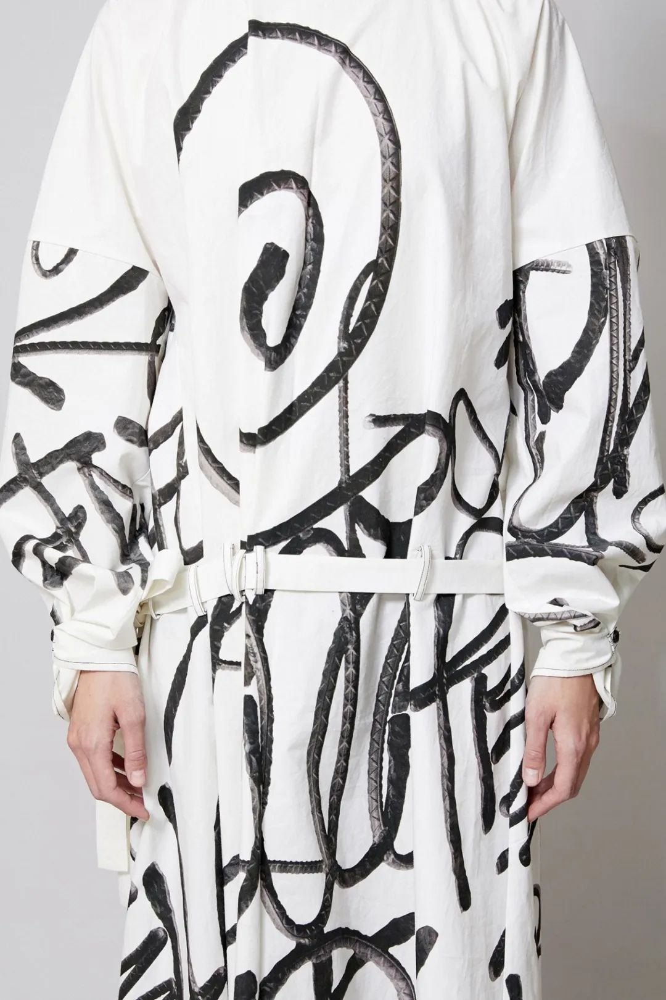
艺术合作系列“UNI-O 2020”
对于消化设计工作室来说，因为时装周和订货会推迟（或取消），我们可以做的就是做好订货资料的准备。我们相对幸运的是，因为去年刚开启“消化三里”这家商店，我们全年只做了一个系列，并且已经在2020年1月9号做完了发布，所以不像其他设计师品牌，面临着2020年秋冬系列无法良好的完成并发布。各环节人员不到位、面辅料调配不齐、物流受阻等等，这对讲求时效、跟循季节的时尚行业，是无法跨越的困难。只能等待。
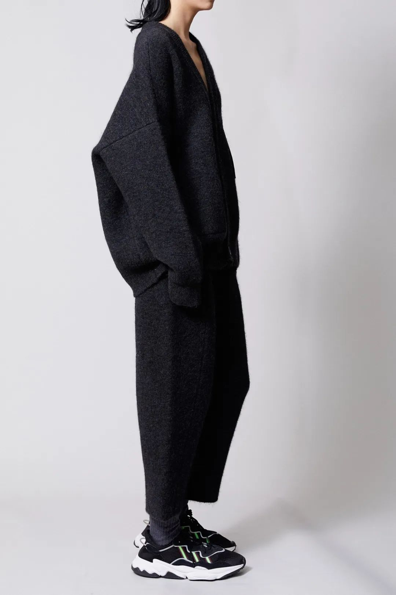
DIGEST UNI- 2020
但另一个棘手的事是，我们必须在3月下旬完成一个全新的胶囊系列，这个是年前谈定的，和一个服装上市公司。虽然疫情算是不可抗力，但这本应是工作室一次很好的锻炼机会，进入一个更宽广的市场，被一个更庞大的系统测试。至少我作为设计师和工作室创办人，是想好好的完成这次“测试”，而不是作为一个项目，搪塞了之。当然，这也迫使我重新思考，人们，包括我自己在内，到底是什么驱使了我们维持“生活”这件事。消费？还是被消费？是稀里糊涂的得过且过，还是心知肚明的被收割？还是，有第三条路？我用自己的技能，能为此做点儿什么？还是，无论做什么，结果已经在远处立着了，都是一样的？
服装设计师完全无法在疫情中发挥作用
面对疫情我们没有特殊的调整。我们体量非常的小，无足轻重。我更关心的是其它更直接的关乎民生民计的行业，他们将做出，或者能做出什么样的调整。
作为服装设计师，我认为服装设计师完全无法在疫情中发挥作用，我已经多次在朋友圈提到服装/时装设计师的无能。
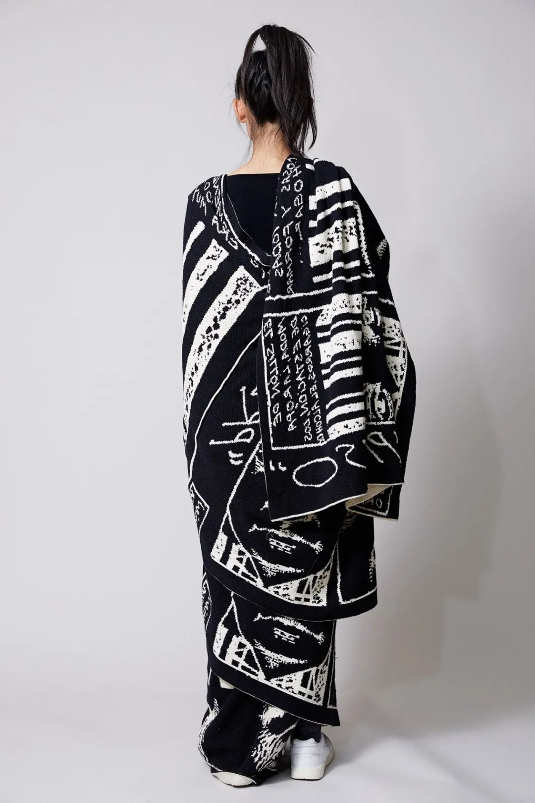
艺术合作系列“UNI-O 2020”
如果非要给自己找拨些作用，大概就是精神和文化方面的了。上个月月底，转了一篇文章，写A.P.C.的，品牌创始人Jean Touitou接受访问说，“我会把衣服给老师和护士，而不是明星们。”“真正的优雅来自文化。”“最不喜欢的生活方式是‘奴隶制’，但这是现在全世界人类的普遍状态。”

独立商店“消化三里DIGEST 3kg”开幕活动邀请函，由设计师广煜设计
真正的时装或时尚，是非常犀利的，它是提炼式的，接近诗歌和政治。它和一篇时评或社论，没有本质区别。不能洞悉生活的本质，是无法做好时尚的。因为时尚只关注当下，只呈现一种瞬间，但却令活在那个当下的人群无法不注目和跟随。这需要具备一定的底层逻辑思考力，而这种思考力，来自文化的积淀。所以我们几乎不谈论美国加拿大澳大利亚这类新起国家的时尚，因为太落后了，从来就没赶上时尚的趟儿，至多说说商业的运作，或者沃尔玛吧。

独立商店“消化三里DIGEST 3kg”由设计师广煜设计的视觉系统
这次疫情让我在状态上更果决了吧，因为有更重要的事等着我去做。技能上，对事物核心的挖掘能力增强了。我是天秤座，大多数时候都在做平衡，是一种本能，也有乐趣，但其实很多是没有必要的。
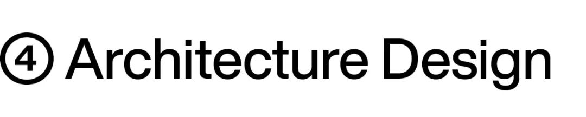

孙海霆，北京垣冶建筑规划设计有限公司创始合伙人，文物保护工程责任设计师
自述：孙海霆
疫情让整个社会急刹车
我1月20号左右意识到疫情的严重性，当时就觉得2020年上半年可能会受影响，过年期间在日本，2月4号回北京以后就一直在家里。每天很规律，自己做三餐，坚持锻炼和工作，和平时比反而节省了上下班在路上堵车的时间，突然觉得在家办公也挺好。
当然对我来说，首要还是如何保证家人和自身的健康，以及采取什么样的方式使公司在疫情期间继续维持正常运转。
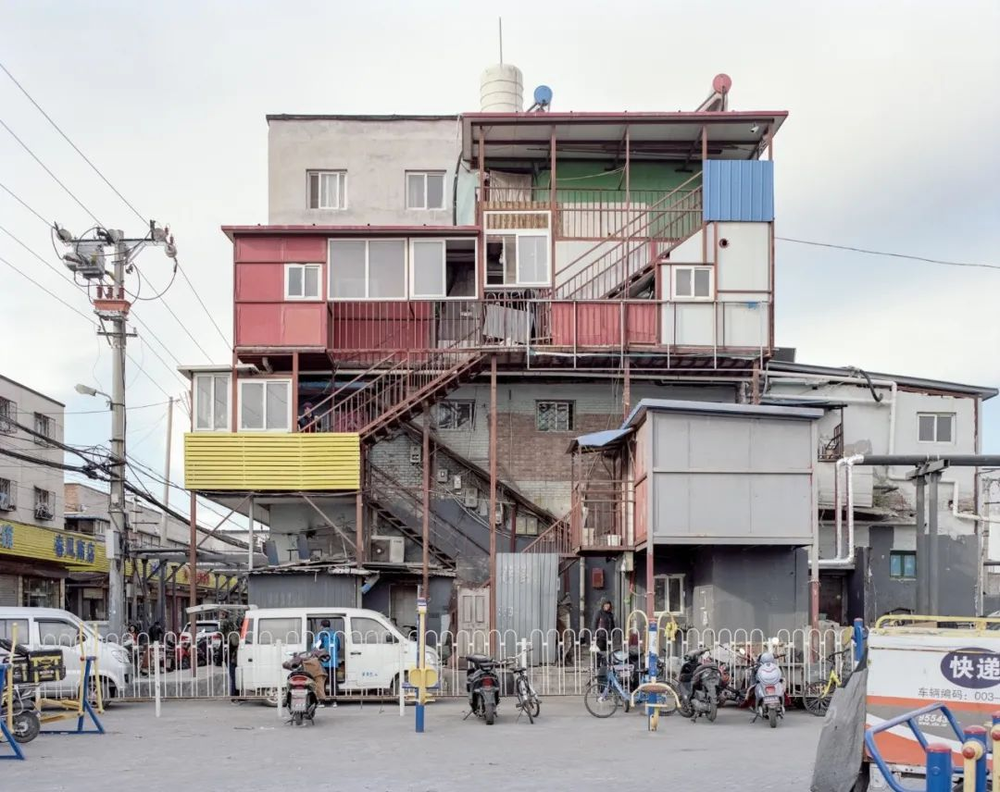
类型学摄影之”城中村“系列 by 孙海霆
今年冬天开始的新的摄影项目也因为不方便外出暂停了，因为这个项目的最佳拍摄时间是冬天，街上没有太多树叶，估计要明年冬天才能拍完了。
我觉得国家或者社会，其实和一个人的个体是一样的，生一次病当然痛苦，但也能检验一下自身的免疫系统，给自己的健康提个醒，亡羊补牢。这段时间国内因为疫情强行刹车，其实也有好处，让大家都停下来好好想想以后怎么走，生活该怎么过。
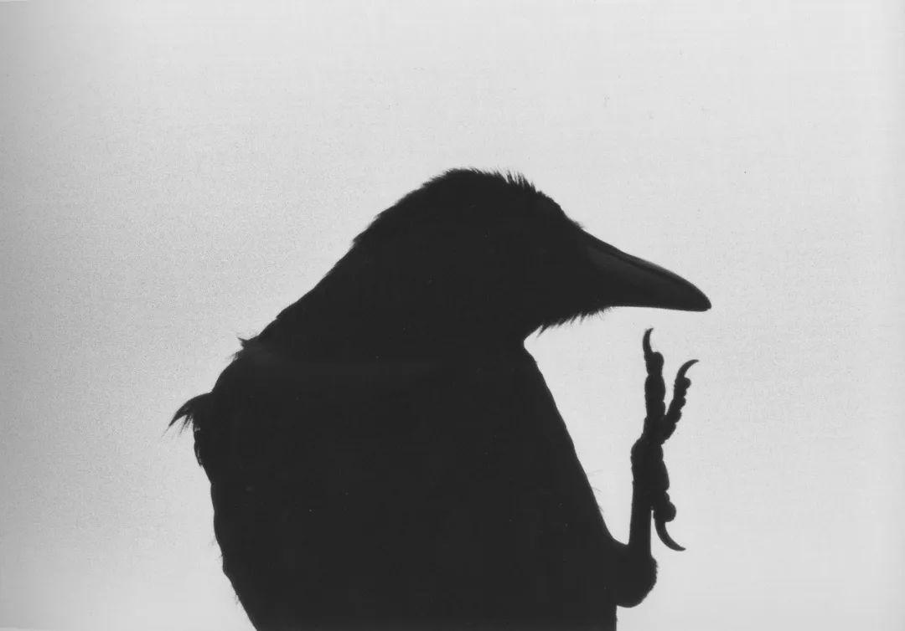
深濑昌久的《鸦》我觉得特别能反映生机和死亡混杂在一起的状态，带着压抑的状态
要保持平稳的节奏
我们是2月3号开始公司远程协同办公的，至今已经快三周了。开工前制定了公司远程办公手册，建立了工作平台，每两周制定一次详细的工作计划。目前看运行还不错，效率和集中办公比并没有明显的降低。公司所有人包括我，目前都在各自家中，先保证集体安全，暂时没有集中办公的打算。
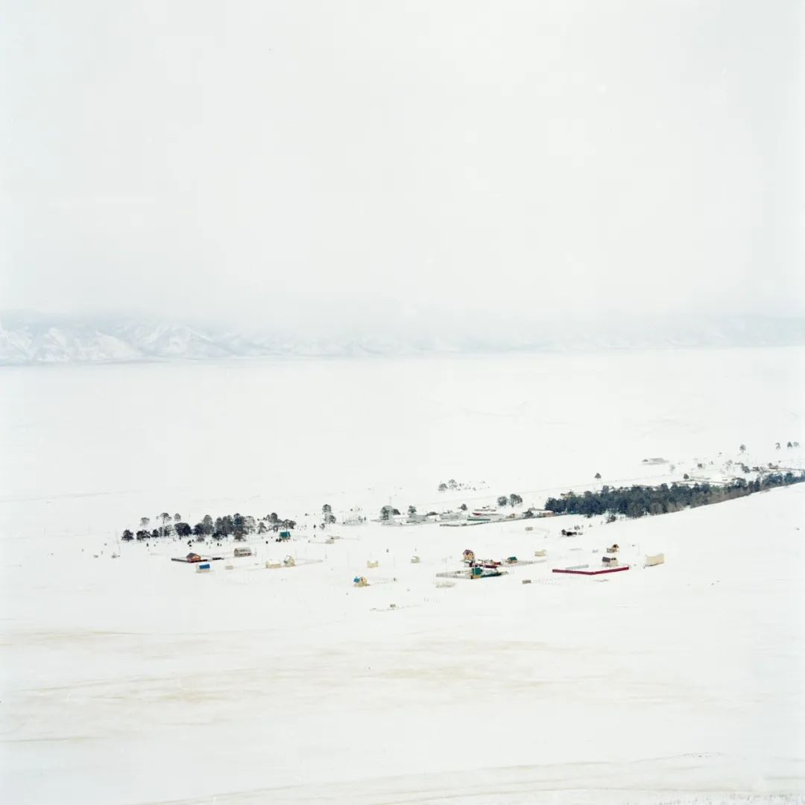
类型学摄影之“人工自然”系列 by 孙海霆
我们和大部分建筑师事务所还是有一定差别，我们专门做文化遗产保护的项目，项目比较稳定，周期也相对长，刚好年前陆续签了几个较大的项目，开春本来是要打算加班加点干到三月份的，疫情反倒给我们稍缓了一口气，可以维持一个正常的工作休息节奏，但由于国家文物局每年三月是一个申报立项的窗口期，所以我们仍然有些项目比较着急。我们和业主（基本都是地方政府文物主管部门）也一直保持沟通，一些新的项目也在洽谈，总体来说对公司影响不是太大。未来公司的发展方向也没有根据疫情调整，我们还是会专注在遗产保护相关的工程设计领域。我了解其他同行基本也都是网上远程工作，下周开始陆续有集中复工的，疫情主要是对项目的进度造成了停滞，新项目也很难接到，但工资社保还要发，对一些储备不足的小事务所还是有影响的。
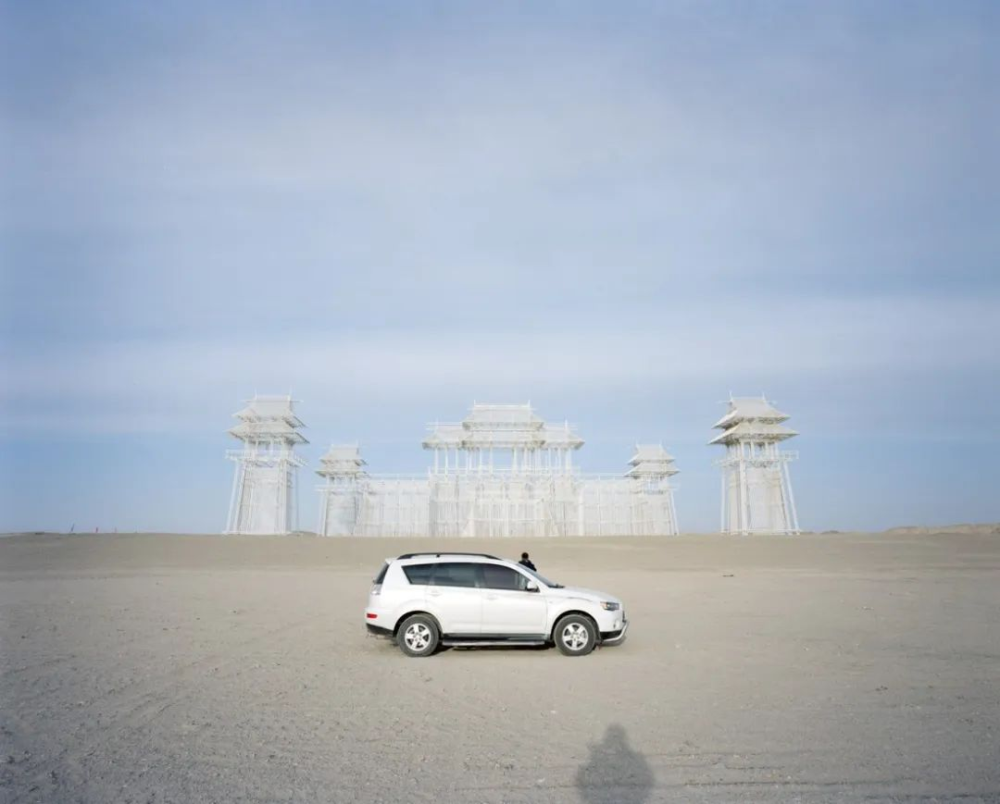
“西部乐园”系列 by 孙海霆
建筑学的影响相对微弱
建筑学短期最直接的作用首先是在医疗建筑方向吧。从长远来看，在城市设计层面上可能更值得探索思考。但我觉得比起医疗、通讯、物流这些领域，建筑学的影响还是明显微弱和滞后的。
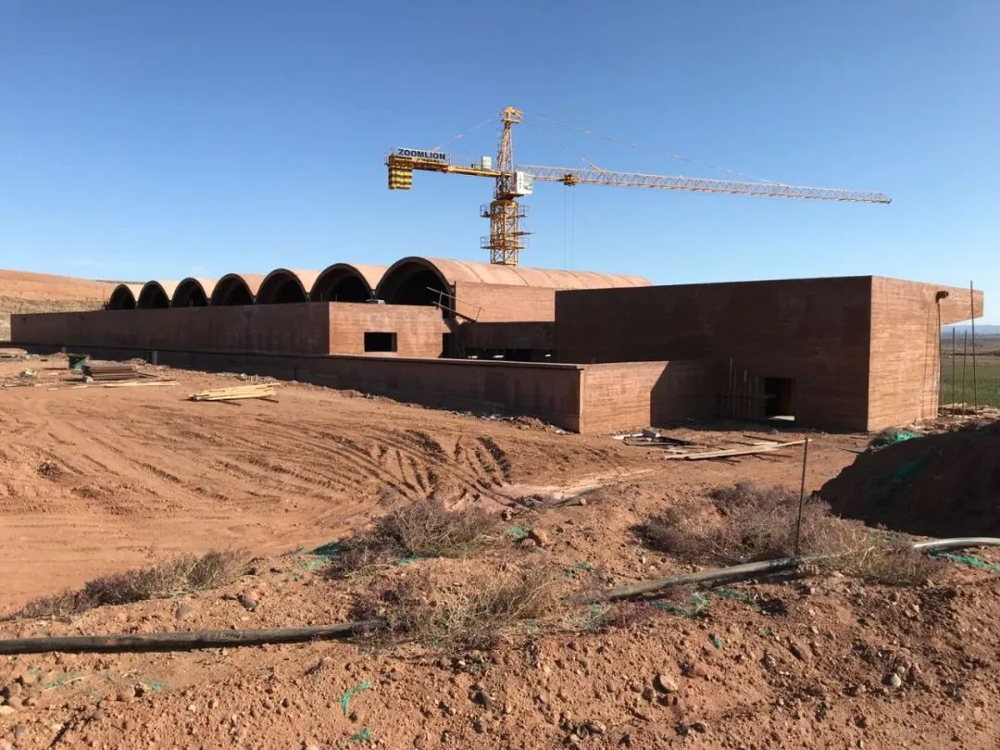
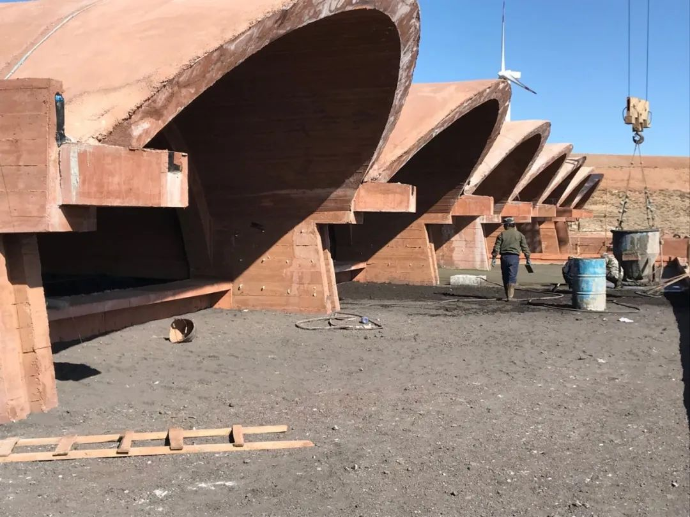
正在建设中的建筑项目
我觉得这次疫情中在极限时间内要建出一个传染病医院，在一套小汤山医院现成的图纸上适当修改基本上是唯一的选择了，这就是一个极限应急案例，不能纳入到正常的建筑设计讨论范畴，承担这次项目图纸设计的建筑师团队已经代表行业能力的极限了，我非常钦佩，我自己是想不出更好的解决方案的。如果说有什么更好的方法和策略，我想也许能设立一个课题，提前设计并预制好应对重大公共安全事件的医疗模块，包含必要的设备和管线，再有类似情况就可以像集装箱一样直接运过去就地组装吧。

疫情期间我有更多的时间在家看书和查阅资料，这对于我目前的工作很有帮助。我觉得通过这段时间的远程办公探索了一套更灵活的工作方式，结束后我们会在长时间的出差、调研过程中继续使用。

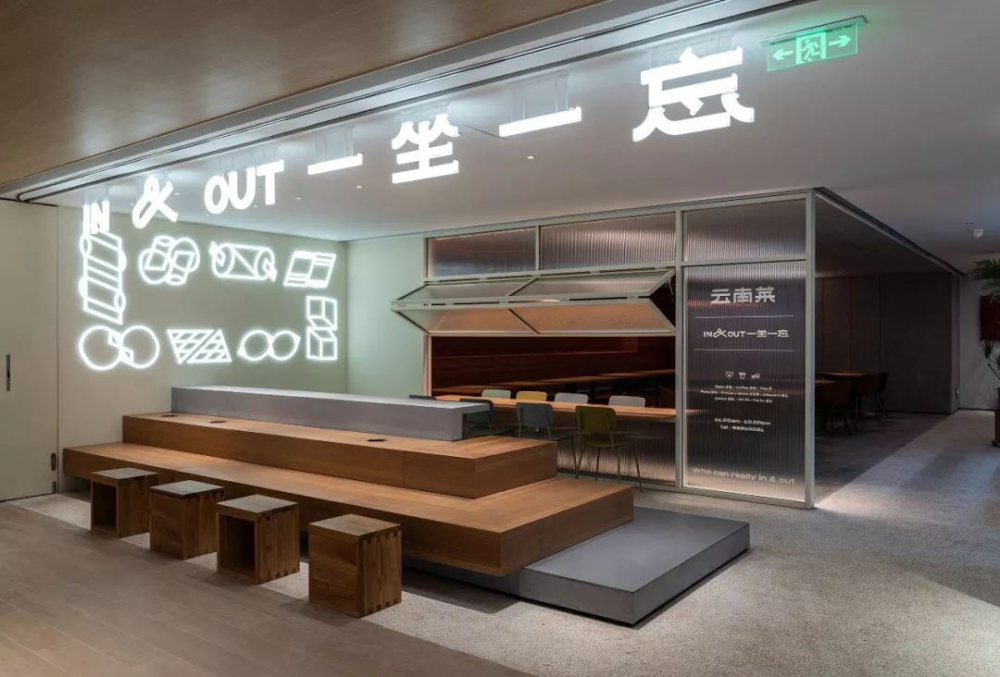
立入禁止为创立于2006年的云南菜老牌餐厅一坐一忘IN&OUT更新了主视觉，2020新年伊始首先在上海浦东的门店公示于众。
一坐一忘现有10家店面
疫情来势凶猛，急迫而无征兆。坐忘应该和所有餐饮企业面临的情况一样：现金流的储备不足。这场疫情扼住了餐饮的咽喉，现金流撑到几时？单一场景下的衣、食、住、行，恐慌焦虑被迫停业，疫情结束，品牌可还安然？作为餐饮品牌，深受疫情带来的恶果。坐忘创业于2006年非典之后，真是躲得了初一躲不过十五。武汉这次疫情和当年的北京非典如出一辙，都属人祸，而其中每一个个体却都只能听天由命……

餐饮主要用餐方式高度依赖线下流量，疫情爆发直接截流线下，餐饮被迫停业。没有疫情坐忘的收入大概有800万，而今年的2月份实际收入应该不会超过30万。今年坐忘年夜饭投入大量的宣传准备，预订了103桌的历史最好业绩，但真的几乎是一夜之间全部取消。
1.没有任何准备的突然关门歇业
2.年前大量年夜饭的前期推广工作及费用
3.错过春节黄金销售期，大量年夜饭预订退单造成食材的损失
4.彻底打乱人员春节期的排休及储备春节期间兼职员工安排
5.年前大量食材储备的损失
6.房租、物业、水电费的损失
7.人员薪资
8.供应商货款堆积支付
…
线上渠道及品牌自平台自救
疫情刚一爆发，餐厅堂食0流水的状况下，品牌通过线上渠道及品牌自平台自救。据各地区疫情防控工作和员工安全，重新安排了员工排休，调整了人力成本。同时也收到华润万象城、瑞安房地产、北京华联阶段性房租减免的通知。对于生活服务业涉及的增值税以及附加税国家税务总局从20年1月1日开始疫情期间全部减免。很大程度上缓解了现金流压力。

品牌各店店长自发做起了卖菜的“微商”和“快递小哥”，开始摆摊卖原材料降低损耗。北京三里屯店、北京skp店、上海新天地店、上海华润店、厦门万象城店5家在营店迅速调整菜品结构，减轻食材运输及储备的压力。2月10日推出“一人食”外卖套餐；2月14日推出腊排骨套餐半成品配送，制作方法简单易学，方便食客在家操作。同时我们也考虑到企业复工后用餐难的问题，专门推出企业营养套餐。确保大家在现阶段，能够更安心、放心、营养的用餐。
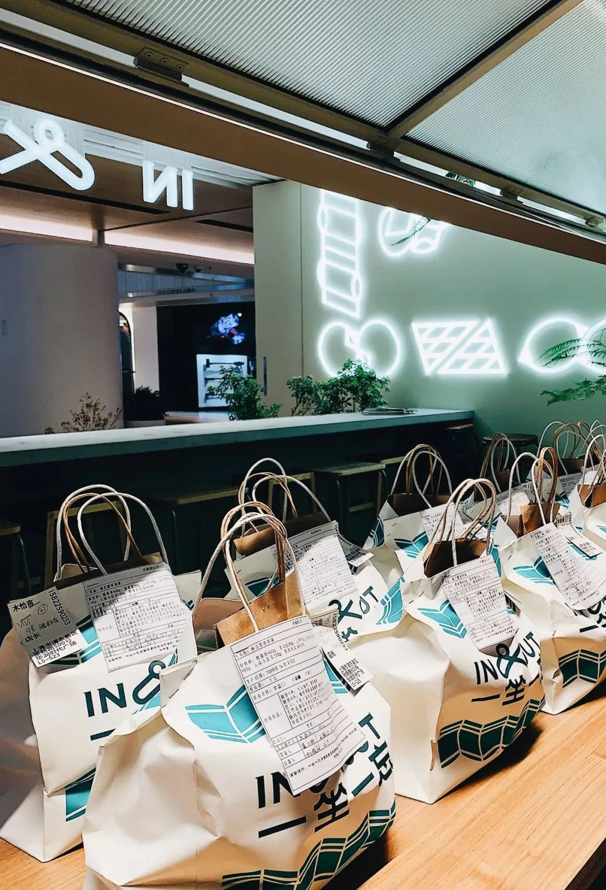
我们针对外送做了严格的防疫把控，从每天早上开始消毒，员工每两小时测量体温，填写每日的防疫检查表，外送登记，在五米外设置外卖的交接点，目前所有在门店上岗的，都是年前就在岗人员，以此确保我们在外送每一个环节的安全。在整个流程上严防死守，绝不妥协，这是我们现在每一位在岗伙伴的共识。这段时间我们也加强、巩固员工对食品安全方面的知识培训，拒烹野味，珍爱生命，保护自然、野生动物，保护生态平衡，人人有责。
坐忘品牌以来最困难的时候，生死仅一线之间
最近分众传媒江南春的一篇文章很火，他说，每一次危机的产生都是改变市场格局的机会，经此一疫，餐饮行业必将迎来一次大洗牌。如何挺过眼前的劫难？疫情之后，一坐一忘到底要放弃什么和坚持什么，如何拉开和竞争对手的差异化，如何构建品牌认知优势？如何从危机与变化中找到方向？感觉自己从来也没有这么严肃的思考过这些问题，不能这么不堪一击，要构筑自己的护城河。

相信市场不会继续低迷了，从春节到整个2月几乎已经低到尘埃里了，所有的最不利的因素都聚集在一起了，是坐忘创品牌以来最困难的时候，生死仅一线之间。危难时刻，坐忘伙伴积极的态度，供应商及物业长期的友好合作关系，疫情期间我们始终保持密切而坦诚的沟通，他们支持给了坐忘很大的信心。

每年3月，正是我们三里屯店窗外玉兰花盛开的季节，希望今年的3月我们还能想往年一样看花开花落，更希望所有人能摘下口罩，从容地走在街上，可以自由地呼吸来自春天的味道。坐忘非常感谢特殊时期媒体平台及KOL的帮助，希望疫情尽早结束，品牌安然无恙。也希望坐忘的伙伴都能平安渡过这段特殊时光，经此一疫，能真正成长起来，切实感受到每一位客人都来之不易甚至弥足珍贵。


abC（art book in China）是基于中国本土的独立艺术书展，立入禁止在他们成立5周年之际为其建立了一套新的视觉系统。
自述：赵梦莎
abC：每日一苹果，重新做个初学者
从上周开始就陆续收到几个艺术界大的展会活动取消的通知。也陆续看到做书店的合作伙伴在众筹续命。这次疫情的影响是全行业的，虽然表面哀鸿遍野，但和身边的“个体户”朋友交流一下，大家都还是冷静应对，都不能算“挺着”。在大型灾难面前，个体的优势就凸显出来，不依赖资本自给自足的单位这时候更容易活下来。我们也有理想主义，但更多的是量力而行。

隔离时间过的很快，正好把平时忙书展想做没做的事儿都在这段时间集中做了。我们也做了一档新的podcast叫“abecedarian初学者电台”（apple/喜马拉雅/网易云都可以收听），总之想用一些行动来回应疫情吧。毕竟我们做abC的主旨是鼓励所有人开始自我行动。

在疫情不明朗的情况下，abC希望可以延期举办
疫情第一棒喝就是美国的travel ban让我们最终没能去参加墨西哥的Metrial艺术书展。年前一直在收尾的新杂志暂时也没办法下厂付印。目前不乐观的部分是疫情在海外的蔓延影响，很多国家停止对中国公民的签证，几大航空公司都是延期到4月底才恢复航线，原计划的LAABF洛杉矶艺术书展估计也是去不成了。

2020年的第五届abC艺术书展目前计划延期举办。尽管疫情的发展仍面临着诸多不确定性，但书展作为每年与全球同行们交流的珍贵机会之一，我们一定不会放弃大家一年一度的期待。我们也给所有往届和已经申请的展方准备了调研问卷，了解大家的真实想法与具体诉求，找到所有解决问题的可能性。举办展览层面我们没有那么悲观，目前都在按照原计划推进。灾情过后，我们渴望见到老朋友，需要相聚和读书，所以不管延后在什么时间举办，相信都会有展方和观众来的。
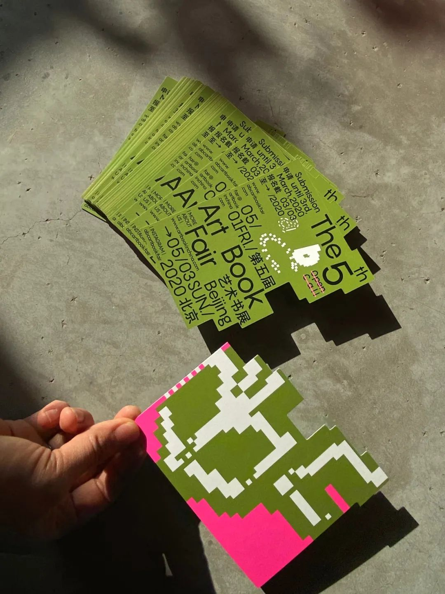
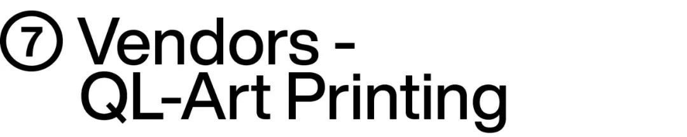
奇良海德以富有变化的材料和工艺组合，为各行各业提供高品质的印刷和衍生产品。奇良海德成立于1995年，从一台二手四开印刷机起家，客户遍及艺术、制造、图书、教育、金融、民生、展览、政府…… 近几年发力文创产品的研发和推广，探索印刷的多种可能性。
自述：周世俊
印刷是重资产行业
我们公司每年春节都放两周的假，毕竟是制造型企业，员工一年忙到头，总要休息调整。然后疫情就开始了……老家也回不去了。
之后和公司探讨各项事宜，理解北京市和顺义区的指示，复工时间推了两次，目前定在3月1日开工。
一开始是有点慌，后面就沉着下来，深入思考后面的工作该怎么推进。印刷行业有个特殊性，它是服务全社会的，也能反应出经济发展的大趋势。十年前汽车在奇良海德的业务占比很重，随着智能手机的发展，汽车业务萎缩到只剩两三成。另一方面，教育行业发力了，头部公司对印刷品的需求相当大。从大的趋势考虑，我们做印刷的就是“哪壶开，提哪壶”。

武隆·懒坝国际大地艺术季周边物料由奇良海德印刷制作
印刷是重资产行业，每年都要增添新设备，高端设备动辄都要几百万。纸张等主要材料对资金的占用也相当大。人员成本上，因为我们有大量的非标订单，要配备很多的手工操作员。奇良海德采用一对一的顾问模式，几十人的销售团队服务各行业的大小客户。总体而言，我们的运营成本相当的高。今年的重要任务就是优化流程，减成本，增效益。
危机，有危也有机
从2月11日开始，我们的销售团队开始了居家学习，大家先阅读网上的资料，之后在大群里做分享。每天还有一个讨论的题目，关于销售技能、跨部门合作等等，计划一直进行到开工。现阶段正是隔绝干扰，提升自我的好时机。

Full Monty西装品牌包装物料由奇良海德印刷制作
我们有些同事比较悲观，觉得疫情会严重打击经济，做本业的资金都缺乏，能拨出来做印刷的就更少。我自己相对乐观，大家都是逆水行舟，加强自己的抗压能力，一旦大势好起来，机会肯定还是有的。

疫情带给我们的是大到社会，小到个体的反思，这几个月我们的价值观不断在一系列的崩塌与重建中周而复始地循环，工作也遭遇了前所未有的挑战。但无论如何，在黑暗中找到自我，既要做好最坏的打算，也同时要怀揣执念和希望。
- 采访／撰文 邱正、Tong Chen、迷盒
点击阅读原文去网站
studionaeo.com


原文链接 备份链接 \ 💪 / *2020年的开头，一场突如其来的疫情让所有行业都笼罩在阴影之下，创意产业也无法幸免。* *工作要么被取消，要么无限延期；每天紧盯确诊人数的变化，似乎也失去了创作的心情……* *疫情之下的你们都还好吗？* …
原文链接 备份链接 整理 | 河 西 截至2020年2月22日12点，在这次疫情中，累计报告的死亡病例已经达到了2348人。 这些鲜活的生命，在一次突如其来的疫情中倒下了。他们中有普通人，也有院长、导演、院士、画家……很多都是各行各业中 …
原文链接 备份链接 2019年底以来的新冠肺炎（COVID-19），几乎改变了每一个中国人的生活轨迹。时至今日，除了因公而必须奔忙于一线的医务工作者、防疫工作者外，大多数人都被困家中，在等待、焦虑、愤怒、无奈等各种情绪混杂中度过每一个日 …
原文链接 备份链接 _光头是精酿啤酒品牌 “18 号酒馆” 的主理人，他和他的酒馆被困在武汉，一场突如其来的传染病的阴影中。_和一位偶然被封锁在同一座城市的朋友一起，他们打开手机的拍摄功能，开始了一场毫无目的的城市漫游。 _两人会全副武装 …
原文链接 备份链接 我是肖途，2019 年加入 “BIE别的” 团队的编辑，武汉人。节前，我在最后一刻退掉了回武汉的车票，但这不代表我的春节过得有丝毫轻松。我的爸爸妈妈在武汉，我每天只能与他们视频通话。 早上醒来，北京下过雪了，一场没由来 …